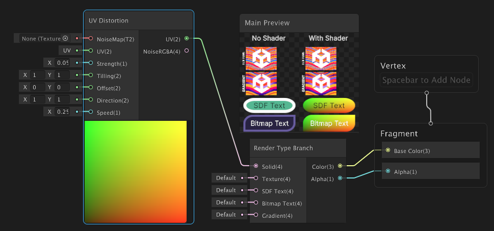
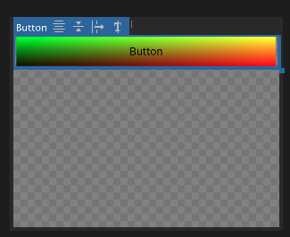

You can use Shader Graph to create custom shaders for UI elements. To understand how UI ShaderA program that runs on the GPU. More info
See in Glossary Graph works, try the following simple example to get started. This example creates a custom shader that applies a gradient effect to a button. For a more detailed overview of UI Shader Graph, refer to Introduction to UI Shader Graph.
Note: UI Shader Graph only works with URP (Universal Render Pipeline).
This guide is for developers familiar with the Unity Editor, UI Toolkit, and C# scripting. Before you start, get familiar with the following:
When you create a shader for UI elements, you typically use the Render Type Branch node to handle different render types. The following steps create a simple shader that applies a UV distortion effectAn audio effect that modifies the sound by squashing and clipping the waveform to produce a rough, harsh result. More info
See in Glossary to the solid color render type of a button.
Create a project with any URP template.
In your Project window, right-click in the Assets folder and select Create > Shader Graph > URP > UI Shader Graph. This creates a UI Shader Graph asset configured for UI rendering.
Name the new asset MyCustomShader.
Double-click MyCustomShader to open it in the Shader Graph editor.
Select Create Node > UI > Render Type Branch.
Select Create Node > UV > UV Distortion.
Connect the UV output of the UV Distortion node to the Solid input of the Render Type Branch node.
Connect the Color output of the Render Type Branch node to the Base Color input of the Fragment node.
Connect the Alpha output of the Render Type Branch node to the Alpha input of the Fragment node. The With Shader in the Main Preview window shows the result of the shader applied to the background for the SDF and Bitmap text.

Save the shader.
To apply a custom shader to a UI element, you need to create a new material that uses your shader and then assign that material to the UI element. The following steps show how to assign the custom shader you created in the previous section to a button in UI Builder. You can also assign custom shaders with USS or C# scripts.
Right-click in the Assets folder and select Create > Material.
Name the new material MyCustomMaterial.
In the InspectorA Unity window that displays information about the currently selected GameObject, asset or project settings, allowing you to inspect and edit the values. More info
See in Glossary window of your new material, select MyCustomShader from the Shader dropdown to assign it to the material.
From the menu, select Window > UI Toolkit > UI Builder to open the UI Builder window.
From the Library panel, drag a Button element into the Hierarchy panel to add a button to your UI Document.
In the Inspector panel for the button, from the Material dropdown list, select MyCustomMaterial to assign the material to the button. The ViewportThe user’s visible area of an app on their screen.
See in Glossary in the UI Builder window shows the button with the custom shader applied.

Note: When you assign a custom shader to a UI element, the shader affects the selected element and all its child elements. Any visual effects or modifications defined in your shader are applied throughout the hierarchy, enabling consistent styling and behavior across nested UI elements.